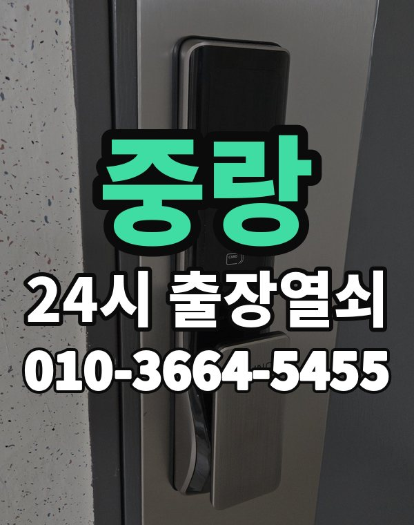

중랑은 이런 곳입니다
중랑구는 면목동, 상봉동 빌라와 신내동, 묵동 아파트 단지가 함께 있는 동네입니다.
오래 쓴 빌라 현관문은 도어락보다 문틀이 먼저 상해 잠김이 생기기도 합니다.

중랑구 출장 가는 동네
- 면목동
- 상봉동
- 중화동
- 묵동
- 망우동
- 신내동
면목동 출장열쇠, 상봉동 열쇠집처럼 동네 이름으로 찾으셨어도 같은 곳입니다.
적혀 있지 않은 동네도 중랑구 안이면 다 갑니다.
중랑에서 하는 일
중랑 출장, 이렇게 알려주세요
빌라는 비슷한 건물이 이어져 있어 건물 이름이나 근처 가게를 같이 알려주세요.
주차가 어려운 골목이면 미리 말씀해 주시면 좋습니다.
상봉역, 면목역, 중화역, 망우역 근처라고 말씀해 주셔도 위치 잡기가 쉬워집니다.
가까운 역이나 큰 건물, 단지 이름을 같이 알려주세요.
- 주소와 건물 이름 (아파트면 동, 호수)
- 문 종류, 번호판이 켜지는지
- 사시는 걸 확인할 신분증이나 우편물이 있는지
전화부터 작업까지 순서는 이용안내에 적어 두었습니다.
중랑 출장열쇠 관련 글
- 서울 중랑 중화동 카드키·태그·리모컨을 잃어버렸을 때 순서대로 정리
- 중랑구 중화동 명절·여행 다녀왔는데 현관문이 안 열린다면 이렇게 하세요
- 중랑구 망우동 우편함·사물함 열쇠를 잃었거나 자물쇠가 안 열릴 때 해결 방법
- 서울 중랑 망우동 도어락 앱 알림이 안 오고 연동이 끊길 때 짚어 볼 순서
- 중랑구 묵동 현관문 쿵 소리·삐걱임·뻑뻑함, 소리로 원인 짚어 보기
- 서울 중랑 묵동 도어락 달기 전 문 두께와 보조키 자리 재는 법
- 서울 중랑 면목동 빌라 공동 출입문·철문이 안 열릴 때 먼저 볼 것
- 중랑구 면목동 비파손 개방이란, 문을 안 상하게 연다는 말의 실제 뜻
- 중랑구 상봉동 열쇠가 부러져 구멍에 박혔을 때 손대기 전 알아 둘 점
- 서울 중랑 상봉동 상가·사무실 출입문 도어락, 문 종류별 점검 포인트
- 중랑구 신내동 한파 아침 도어락이 굼뜨거나 꺼질 때 대처 요령
- 서울 중랑 신내동 도어락 비밀번호가 기억나지 않거나 가족이 바꿨을 때
중랑 출장열쇠 자주 묻는 질문
중랑구 끝쪽 동네도 오시나요?
면목동, 상봉동, 중화동, 묵동, 망우동, 신내동 등 중랑구 전 지역 갑니다. 중랑구 안이라면 동네 상관없이 갑니다.
새벽에 중랑에서 전화해도 되나요?
밤이든 새벽이든 받습니다. 어디인지 들으면 언제쯤 도착하는지 바로 말씀드립니다.
개방에 실패해도 비용이 나오나요?
열지 못하면 비용은 없습니다. 작업 전에 금액을 듣고 정하시면 됩니다.
본인 확인은 어떻게 하나요?
사시는 분이 맞는지만 확인되면 됩니다. 신분증이나 우편물을 준비해 주세요.
중랑에서 도어락 고장도 봐주시나요?
네, 문 열기와 함께 도어락 수리, 설치, 교체도 합니다. 고쳐서 되면 교체는 권하지 않습니다.